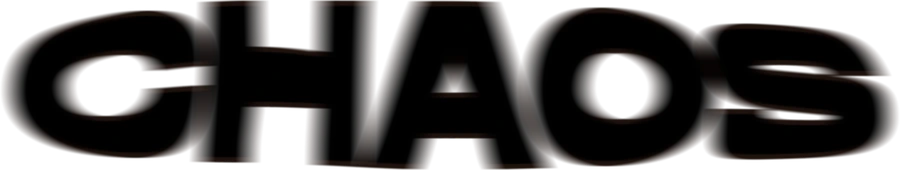
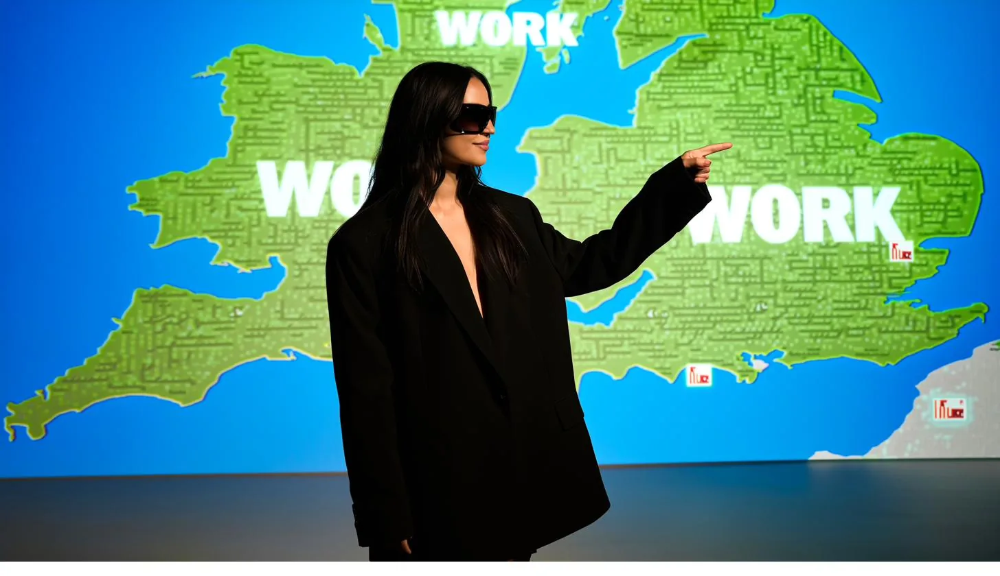
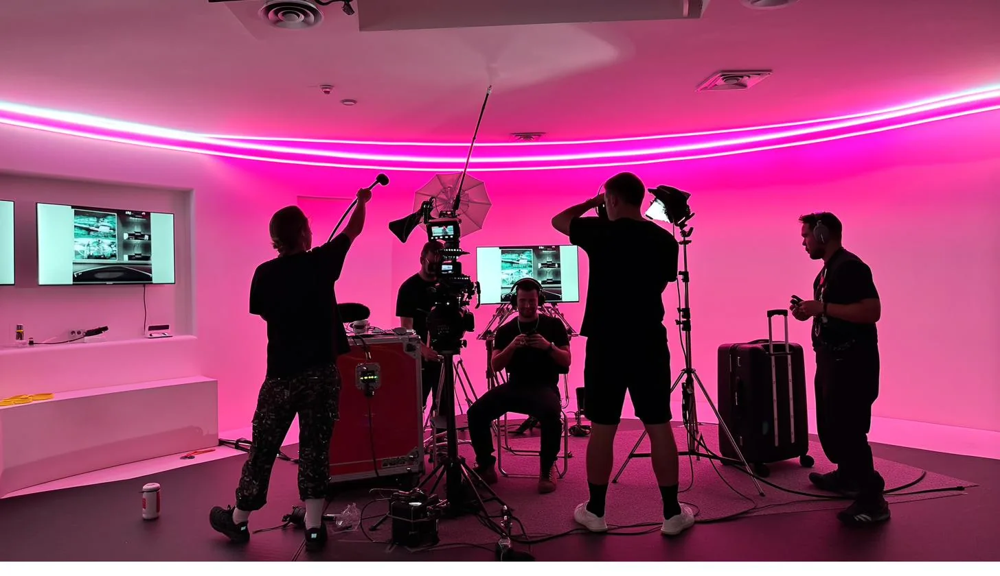
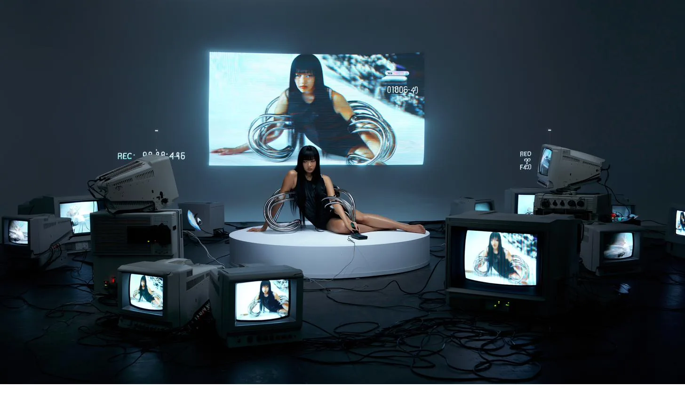
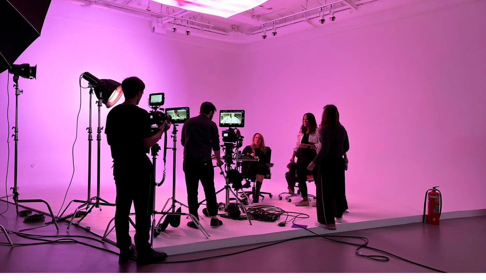
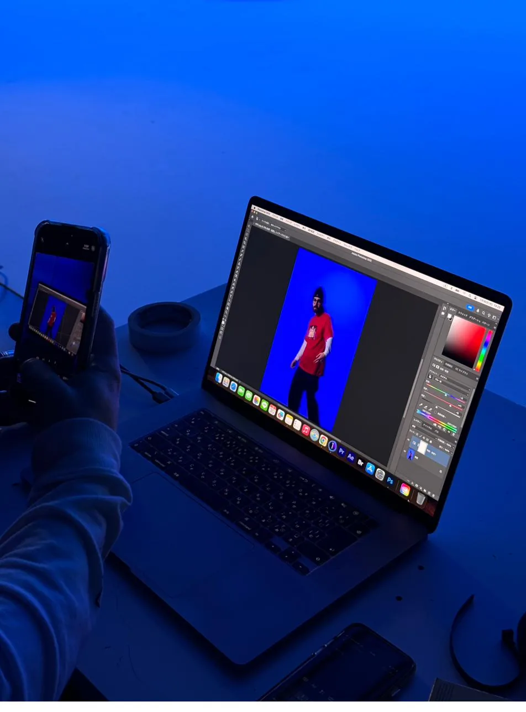
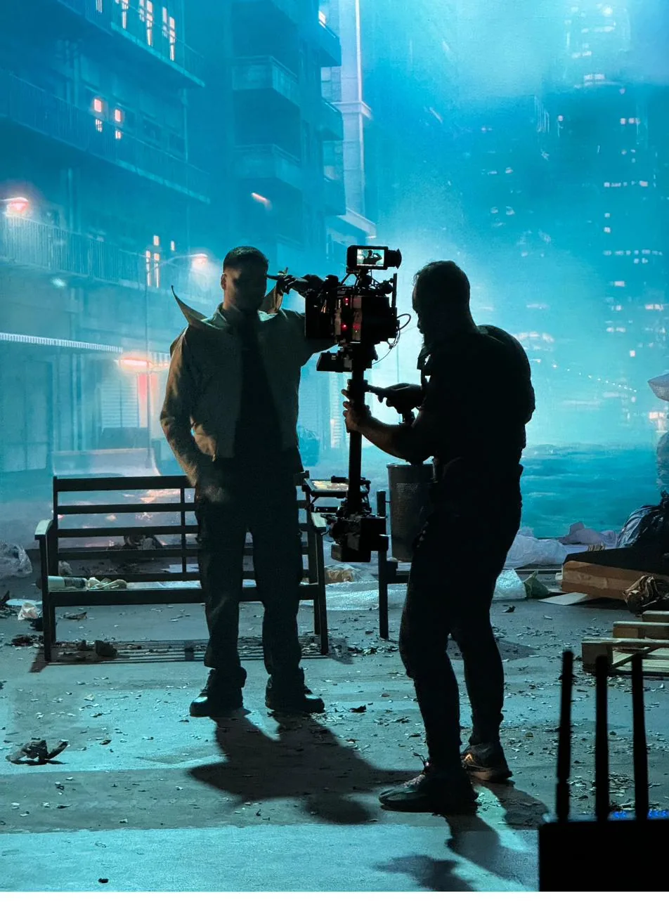

01
Creative
Direction
Conceptos, campañas, universos visuales, moodboards, referencias, narrativa y dirección general de proyectos.

Based in Madrid ↓ Scroll

) (
) CONTENIDO E IDEAS (
)(01) Qué es Chaos Department
NO RULES.
JUST VISION.
Sin reglas. Solo visión.
Somos un estudio de dirección creativa. Venimos de la publicidad y el social media, y nos hemos quedado con lo único que nos interesa de verdad: construir el universo visual de una marca y producirlo de principio a fin.
Trabajamos en cultura, moda, música, gastronomía y marcas que no quieren parecerse a su competencia. Pensamos el concepto, dirigimos el rodaje, montamos la pieza y la ponemos en la calle.

Creative Network
Post & Edición(02) El territorio de Chaos
01
Conceptos, campañas, universos visuales, moodboards, referencias, narrativa y dirección general de proyectos.
02
Rodajes, dirección de vídeo, contenido para artistas, fashion films, fotografía, edición y producción de campañas.

03
IA, conceptos experimentales, nuevas narrativas, coolhunting y exploración de formatos que todavía no son habituales.
04
Una red de fotógrafos, diseñadores, estilistas, directores de arte, motion designers, desarrolladores y otros especialistas para ejecutar proyectos.
(03) Seguimos con